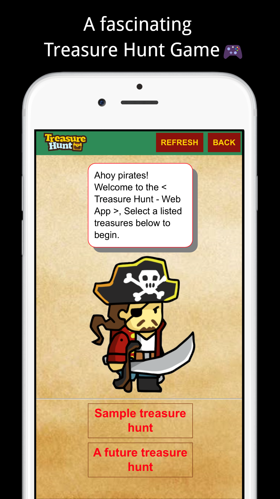
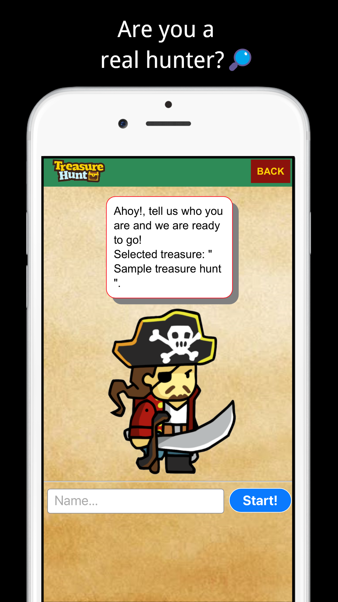

Do you like treasure hunts? We ❤️ them too!
Meet our new ✨Game✨



Every time we create something new, we go from zero to one.
- Peter Thiel
So, do you want to know what we do?
Basically, we are a team of three computer science undergraduates whose scope
is to plan and develop a popular, fully working treasure hunt web application.
At the same time, our purpose is to learn how to successfully
work as a team and meet the demands of our roles and deadlines. Also,
to learn how to research, organise, and design something from scratch.
The scope of the project is to build a web application which will be used
for playing an online treasure hunt. The Web App will be built based on the treasure hunt API.
Christos Topaka
Email:In the initial stage of the project, Christos focuses on the creation of the landing page as well as social media accounts. In a later stage, he will join his other two teammates in the build of the application.
Guowei Vasiliou
Email:Guowei focuses on the creation of the treasure hunt application due to his great understanding of the API. Also, he is always available to help with any problems that may come up
Iraklis Tchanturia
Email:Iraklis focus is mainly on the build of the application. Additionally, he notes down our meetings and helps with the landing page when needed
SOCIAL MEDIA
Follow @TeamCGI1Tweets by TeamCGI1